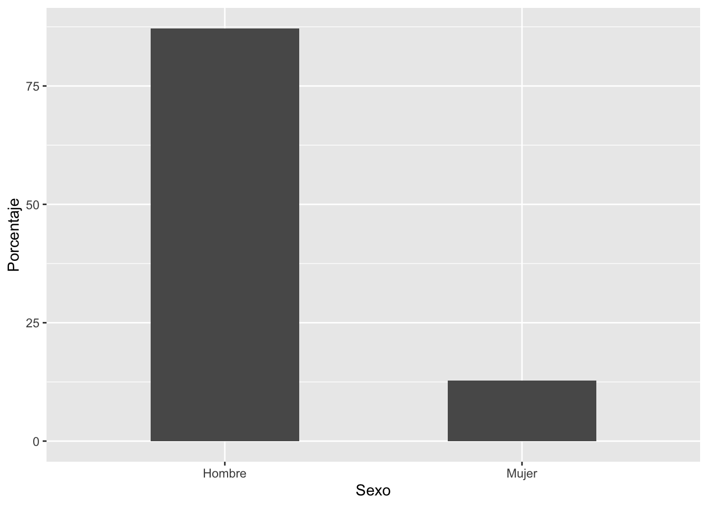
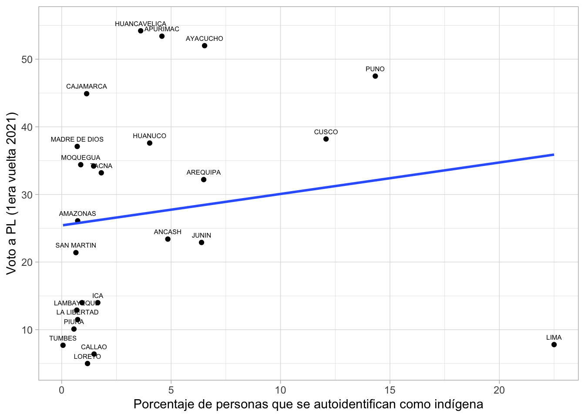
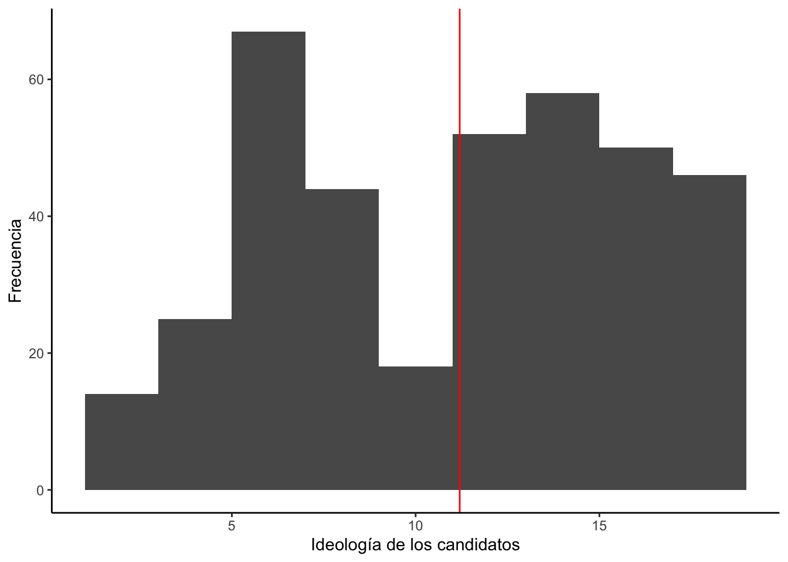
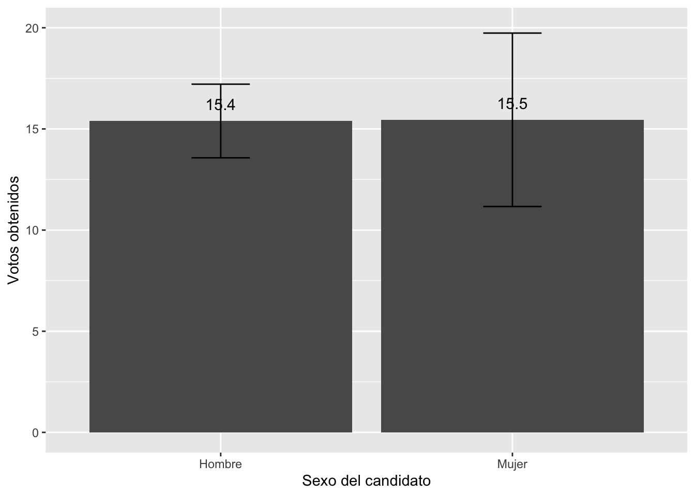
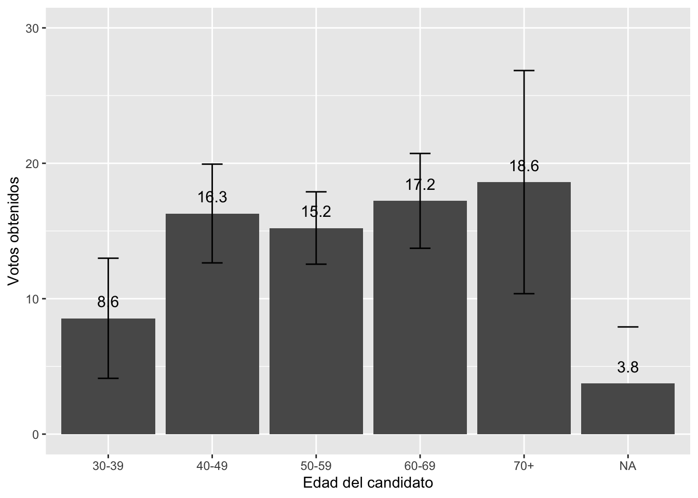
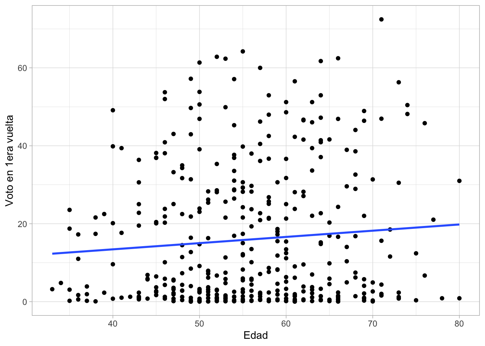

Clase 14
Arturo Maldonado
21/11/2023
Repaso
Cargando datos
Abrir la base de datos de los candidatos presidenciales en América Latina desde el 2000 hasta el 2018.
library(rio)
cand = import("Numeric_election_DATOS.xlsx")Manipulando datos
- Factorizar la variable sexo del candidato
library(dplyr)
cand = cand |>
mutate(sexo = factor(csex, labels=c("Hombre", "Mujer")))Crear una variable de grupos de edad, sobre la base de la edad (variable “cage”).
Para esto es necesario revisar la distribución de la variable
table(cand$cage)##
## 33 34 35 36 37 38 39 40 41 42 43 44 45 46 47 48 49 50 51 52 53 54 55 56 57 58
## 1 1 4 4 3 3 2 5 3 1 10 6 10 12 11 12 15 21 15 14 15 17 23 15 15 14
## 59 60 61 62 63 64 65 66 67 68 69 70 71 72 73 74 75 76 77 78 80
## 13 17 14 10 11 15 8 12 5 9 9 5 6 2 5 2 2 2 1 1 2Vemos que hay candidatos desde los 33 hasta los 80 años. Se puede pensar en crear grupos basados en décadas. El último grupo puede ser de 70 a más.
Esto se puede hacer de múltiples maneras, usando el comando
case_when.
cand = cand |>
mutate(gedad = case_when(
cage == 33 ~ 1, cage == 34 ~ 1, cage == 35 ~ 1, cage == 36 ~ 1, cage == 37 ~ 1,
cage == 38 ~ 1, cage == 39 ~ 1))cand = cand |>
mutate(gedad = case_when(
cage <= 39 ~ 1,
(cage >= 40) & (cage <=49) ~ 2,
(cage >= 50) & (cage <=59) ~ 3,
(cage >= 60) & (cage <=69) ~ 4,
cage >= 70 ~ 5,
))cand = cand |>
mutate(gedad2 = case_when(
cage <= 39 ~ 1,
cage %in% 40:49 ~ 2,
cage %in% 50:59 ~ 3,
cage %in% 60:69 ~ 4,
cage %in% 70:80 ~ 5
))cand = cand |>
mutate(gedad2 = factor(gedad2, labels=c("30-39", "40-49", "50-59", "60-69", "70+")))- La variable que recoge el voto en primera vuelta está en forma de proporción y no de porcentaje. Vamos a transformarla en porcentaje.
cand = cand |>
mutate(voto1 = v2porcvalido_1ra)Descriptivos univariados
- ¿Qué proporción de candidatos en América Latina son hombres y mujeres?
tabla1 = cand |>
count(Sexo = sexo, name="Frecuencia") |>
mutate(Porcentaje = (Frecuencia / sum(Frecuencia)*100 ))
tabla1## Sexo Frecuencia Porcentaje
## 1 Hombre 367 87.1734
## 2 Mujer 54 12.8266- Visualización de una tabla de frecuencias.
library(ggplot2)
ggplot(tabla1, aes(x=Sexo,y=Porcentaje))+
geom_bar(stat="identity", width=0.5)
- ¿Cuál es el promedio de edad de los candidatos presidenciales en América Latina?
tabla2 = cand |>
summarise(minimo = min(cage, na.rm = T), media = mean(cage, na.rm = T),
mediana = median(cage, na.rm = T),maximo = max(cage, na.rm = T),
desviacion = sd(cage, na.rm = T))
tabla2## minimo media mediana maximo desviacion
## 1 33 55.62035 55 80 9.265959- Visualización de una variable numérica
ggplot(cand, aes(x=cage))+
geom_histogram(binwidth = 2)+
geom_vline(xintercept = 55.6, color = "red")+
xlab("Edad de los candidatos")+
ylab("Frecuencia")+
theme_classic()## Warning: Removed 18 rows containing non-finite
## outside the scale range
## (`stat_bin()`).
- ¿Cuál es el promedio de votos obtenidos por candidatos presidenciales en América Latina?
tabla3 = cand |>
summarise(minimo = min(voto1, na.rm = T), media = mean(voto1, na.rm = T),
mediana = median(voto1, na.rm = T),maximo = max(voto1, na.rm = T),
desviacion = sd(voto1, na.rm = T))
tabla3## minimo media mediana maximo desviacion
## 1 0.01 15.40017 6.585 72.44 17.31102ggplot(cand, aes(x=voto1))+
geom_histogram(binwidth = 5)+
geom_vline(xintercept = 15.4, color = "red")+
geom_vline(xintercept = 6.6, color = "green")+
xlab("Voto de los candidatos")+
ylab("Frecuencia")+
theme_classic()## Warning: Removed 7 rows containing non-finite
## outside the scale range
## (`stat_bin()`).
- Cuál es la ideología promedio de los candidatos presidenciales en América Latina?
tabla.ideo = cand |>
summarise(minimo = min(v2ideology_core, na.rm = T),
media = mean(v2ideology_core, na.rm = T),
mediana = median(v2ideology_core, na.rm = T),
maximo = max(v2ideology_core, na.rm = T),
desviacion = sd(v2ideology_core, na.rm = T))
tabla.ideo## minimo media mediana maximo desviacion
## 1 1.6 11.17832 11.6 19 4.855254- Graficar
ggplot(cand, aes(x=v2ideology_core))+
geom_histogram(binwidth = 2)+
geom_vline(xintercept = 11.2, color = "red")+
xlab("Ideología de los candidatos")+
ylab("Frecuencia")+
theme_classic()## Warning: Removed 47 rows containing non-finite
## outside the scale range
## (`stat_bin()`).
Comparación entre grupos
- ¿Los candidatos hombres logran más votos que las candidatas mujeres en las primeras vueltas en América Latina?
library(lsr)
votoxsexo = cand |>
group_by(Sexo = sexo) |>
summarize(Minimo = min(voto1, na.rm = T),
Media = mean(voto1, na.rm = T),
Maximo = max(voto1, na.rm = T),
Desv.Std = sd(voto1, na.rm = T),
Limite.inf = ciMean(voto1, na.rm=T)[1],
Limite.sup = ciMean(voto1, na.rm=T)[2])
votoxsexo## # A tibble: 2 × 7
## Sexo Minimo Media Maximo Desv.Std Limite.inf Limite.sup
## <fct> <dbl> <dbl> <dbl> <dbl> <dbl> <dbl>
## 1 Hombre 0.01 15.4 72.4 17.6 13.6 17.2
## 2 Mujer 0.02 15.5 48.0 15.7 11.2 19.7- Graficar la comparación
library(ggplot2)
graf1 = ggplot(votoxsexo, aes(x=Sexo, y=Media))+
geom_bar(stat="identity")+
geom_errorbar(aes(ymin=Limite.inf, ymax=Limite.sup), width=0.2)+
geom_text(aes(label=paste(round(Media, 1))), vjust=-1, size=4)+
xlab("Sexo del candidato") + ylab("Votos obtenidos")+
ylim(0, 20)
graf1
- ¿Quiénes obtienen más votos en promedio, los candidatos jóvenes o los mayores?
votoxedad = cand |>
group_by(Edad = gedad2) |>
summarize(Minimo = min(voto1, na.rm = T),
Media = mean(voto1, na.rm = T),
Maximo = max(voto1, na.rm = T),
Desv.Std = sd(voto1, na.rm = T),
Limite.inf = ciMean(voto1, na.rm=T)[1],
Limite.sup = ciMean(voto1, na.rm=T)[2])
votoxedad## # A tibble: 6 × 7
## Edad Minimo Media Maximo Desv.Std Limite.inf Limite.sup
## <fct> <dbl> <dbl> <dbl> <dbl> <dbl> <dbl>
## 1 30-39 0.08 8.56 23.6 8.92 4.12 13.0
## 2 40-49 0.01 16.3 57.2 16.5 12.6 19.9
## 3 50-59 0.02 15.2 64.2 17.1 12.6 17.9
## 4 60-69 0.02 17.2 62.5 18.4 13.7 20.7
## 5 70+ 0.06 18.6 72.4 21.2 10.4 26.9
## 6 <NA> 0.01 3.75 30.6 8.38 -0.415 7.92La fila de NA se puede eliminar en la table o se puede filtrar en el
código con filter.
- Graficar comparación entre varios grupos
graf1 = ggplot(votoxedad, aes(x=Edad, y=Media))+
geom_bar(stat="identity")+
geom_errorbar(aes(ymin=Limite.inf, ymax=Limite.sup), width=0.2)+
geom_text(aes(label=paste(round(Media, 1))), vjust=-1, size=4)+
xlab("Edad del candidato") + ylab("Votos obtenidos")+
ylim(0, 30)
graf1
- Y qué pasa en las segundas vueltas? Cuántas mujeres llegan?
cand = cand |>
mutate(voto2 = v2porcval_2da)tabla4 = cand |>
filter(v2candseg==1) |>
count(Sexo = sexo, name="Frecuencia") |>
mutate(Porcentaje = (Frecuencia / sum(Frecuencia)*100 ))
tabla4## Sexo Frecuencia Porcentaje
## 1 Hombre 48 85.71429
## 2 Mujer 8 14.28571- Qué porcentaje de votos obtienen?
voto2daxsexo = cand |>
filter(v2candseg==1) |>
group_by(Sexo = sexo) |>
summarize(Minimo = min(voto2, na.rm = T),
Media = mean(voto2, na.rm = T),
Maximo = max(voto2, na.rm = T),
Desv.Std = sd(voto2, na.rm = T),
Limite.inf = ciMean(voto2, na.rm=T)[1],
Limite.sup = ciMean(voto2, na.rm=T)[2])
voto2daxsexo## # A tibble: 2 × 7
## Sexo Minimo Media Maximo Desv.Std Limite.inf Limite.sup
## <fct> <dbl> <dbl> <dbl> <dbl> <dbl> <dbl>
## 1 Hombre 0 49.2 77.8 11.8 45.8 52.6
## 2 Mujer 31.3 46.1 62.2 11.4 36.7 55.6Inferencia
Pruebas de significancia
- Realizar una prueba para poner a prueba la comparación entre grupos
library(DescTools)
LeveneTest(cand$voto1, cand$sexo)## Levene's Test for Homogeneity of Variance (center = median)
## Df F value Pr(>F)
## group 1 0.1651 0.6848
## 412t.test(cand$voto1 ~ cand$sexo, var.equal=T)##
## Two Sample t-test
##
## data: cand$voto1 by cand$sexo
## t = -0.023078, df = 412, p-value = 0.9816
## alternative hypothesis: true difference in means between group Hombre and group Mujer is not equal to 0
## 95 percent confidence interval:
## -5.030318 4.913577
## sample estimates:
## mean in group Hombre mean in group Mujer
## 15.39256 15.45093anova = aov(cand$voto1 ~ cand$gedad2)
summary(anova)## Df Sum Sq Mean Sq F value Pr(>F)
## cand$gedad2 4 1454 363.5 1.199 0.311
## Residuals 391 118563 303.2
## 25 observations deleted due to missingnessCorrelación
- Presentar gráfico de dispersión del voto a candidato por edad
ggplot(cand, aes(x=cage, y=voto1))+
geom_point()+
geom_smooth(method=lm, se=F)+ #agregar línea de tendencia
labs(x="Edad",
y="Voto en 1era vuelta")+ #para etiquetar los ejes
theme_light()## `geom_smooth()` using formula = 'y ~
## x'## Warning: Removed 25 rows containing non-finite
## outside the scale range
## (`stat_smooth()`).## Warning: Removed 25 rows containing missing
## values or values outside the scale
## range (`geom_point()`).
Regresión lineal simple
- Realizar un modelo de alguno de los gráficos de dispersión
modelo1 = lm(cand$voto1 ~ cand$cage)
summary(modelo1)##
## Call:
## lm(formula = cand$voto1 ~ cand$cage)
##
## Residuals:
## Min 1Q Median 3Q Max
## -18.937 -14.084 -8.026 11.134 54.068
##
## Coefficients:
## Estimate Std. Error t value Pr(>|t|)
## (Intercept) 7.04666 5.32474 1.323 0.1865
## cand$cage 0.15951 0.09432 1.691 0.0916 .
## ---
## Signif. codes: 0 '***' 0.001 '**' 0.01 '*' 0.05 '.' 0.1 ' ' 1
##
## Residual standard error: 17.39 on 394 degrees of freedom
## (25 observations deleted due to missingness)
## Multiple R-squared: 0.007207, Adjusted R-squared: 0.004687
## F-statistic: 2.86 on 1 and 394 DF, p-value: 0.09159modelo2 = lm(cand$voto2 ~ cand$cage)
summary(modelo2)##
## Call:
## lm(formula = cand$voto2 ~ cand$cage)
##
## Residuals:
## Min 1Q Median 3Q Max
## -9.702 -7.450 -6.584 -5.776 70.945
##
## Coefficients:
## Estimate Std. Error t value Pr(>|t|)
## (Intercept) 0.46336 5.31760 0.087 0.931
## cand$cage 0.11548 0.09431 1.225 0.221
##
## Residual standard error: 17.52 on 401 degrees of freedom
## (18 observations deleted due to missingness)
## Multiple R-squared: 0.003725, Adjusted R-squared: 0.001241
## F-statistic: 1.499 on 1 and 401 DF, p-value: 0.2215cand = cand |>
mutate(mujer = ifelse(csex==2, 1, 0))modelo3 = lm(cand$voto1 ~ cand$mujer)
summary(modelo3)##
## Call:
## lm(formula = cand$voto1 ~ cand$mujer)
##
## Residuals:
## Min 1Q Median 3Q Max
## -15.431 -14.093 -8.808 11.000 57.047
##
## Coefficients:
## Estimate Std. Error t value Pr(>|t|)
## (Intercept) 15.39256 0.91348 16.851 <2e-16 ***
## cand$mujer 0.05837 2.52930 0.023 0.982
## ---
## Signif. codes: 0 '***' 0.001 '**' 0.01 '*' 0.05 '.' 0.1 ' ' 1
##
## Residual standard error: 17.33 on 412 degrees of freedom
## (7 observations deleted due to missingness)
## Multiple R-squared: 1.293e-06, Adjusted R-squared: -0.002426
## F-statistic: 0.0005326 on 1 and 412 DF, p-value: 0.9816Regresión lineal múltiple
- Seguir con el modelo simple, ahora introduciendo controles
modelo4 = lm(cand$voto1 ~ cand$cage + cand$mujer + cand$v2ideology_core)
summary(modelo4)##
## Call:
## lm(formula = cand$voto1 ~ cand$cage + cand$mujer + cand$v2ideology_core)
##
## Residuals:
## Min 1Q Median 3Q Max
## -18.51 -14.72 -8.25 11.76 54.51
##
## Coefficients:
## Estimate Std. Error t value Pr(>|t|)
## (Intercept) 9.27698 6.44883 1.439 0.151
## cand$cage 0.11079 0.10535 1.052 0.294
## cand$mujer 0.36659 2.83186 0.129 0.897
## cand$v2ideology_core 0.09218 0.19693 0.468 0.640
##
## Residual standard error: 17.79 on 352 degrees of freedom
## (65 observations deleted due to missingness)
## Multiple R-squared: 0.003757, Adjusted R-squared: -0.004733
## F-statistic: 0.4425 on 3 and 352 DF, p-value: 0.7227ggplot(cand, aes(x=cage, y=voto1))+
geom_point()+
geom_smooth(method=lm, se=F)+ #agregar línea de tendencia
labs(x="Edad",
y="Voto en 1era vuelta")+ #para etiquetar los ejes
facet_wrap(~ mujer) ## `geom_smooth()` using formula = 'y ~
## x'## Warning: Removed 25 rows containing non-finite
## outside the scale range
## (`stat_smooth()`).## Warning: Removed 25 rows containing missing
## values or values outside the scale
## range (`geom_point()`).
theme_light()## List of 136
## $ line :List of 6
## ..$ colour : chr "black"
## ..$ linewidth : num 0.5
## ..$ linetype : num 1
## ..$ lineend : chr "butt"
## ..$ arrow : logi FALSE
## ..$ inherit.blank: logi TRUE
## ..- attr(*, "class")= chr [1:2] "element_line" "element"
## $ rect :List of 5
## ..$ fill : chr "white"
## ..$ colour : chr "black"
## ..$ linewidth : num 0.5
## ..$ linetype : num 1
## ..$ inherit.blank: logi TRUE
## ..- attr(*, "class")= chr [1:2] "element_rect" "element"
## $ text :List of 11
## ..$ family : chr ""
## ..$ face : chr "plain"
## ..$ colour : chr "black"
## ..$ size : num 11
## ..$ hjust : num 0.5
## ..$ vjust : num 0.5
## ..$ angle : num 0
## ..$ lineheight : num 0.9
## ..$ margin : 'margin' num [1:4] 0points 0points 0points 0points
## .. ..- attr(*, "unit")= int 8
## ..$ debug : logi FALSE
## ..$ inherit.blank: logi TRUE
## ..- attr(*, "class")= chr [1:2] "element_text" "element"
## $ title : NULL
## $ aspect.ratio : NULL
## $ axis.title : NULL
## $ axis.title.x :List of 11
## ..$ family : NULL
## ..$ face : NULL
## ..$ colour : NULL
## ..$ size : NULL
## ..$ hjust : NULL
## ..$ vjust : num 1
## ..$ angle : NULL
## ..$ lineheight : NULL
## ..$ margin : 'margin' num [1:4] 2.75points 0points 0points 0points
## .. ..- attr(*, "unit")= int 8
## ..$ debug : NULL
## ..$ inherit.blank: logi TRUE
## ..- attr(*, "class")= chr [1:2] "element_text" "element"
## $ axis.title.x.top :List of 11
## ..$ family : NULL
## ..$ face : NULL
## ..$ colour : NULL
## ..$ size : NULL
## ..$ hjust : NULL
## ..$ vjust : num 0
## ..$ angle : NULL
## ..$ lineheight : NULL
## ..$ margin : 'margin' num [1:4] 0points 0points 2.75points 0points
## .. ..- attr(*, "unit")= int 8
## ..$ debug : NULL
## ..$ inherit.blank: logi TRUE
## ..- attr(*, "class")= chr [1:2] "element_text" "element"
## $ axis.title.x.bottom : NULL
## $ axis.title.y :List of 11
## ..$ family : NULL
## ..$ face : NULL
## ..$ colour : NULL
## ..$ size : NULL
## ..$ hjust : NULL
## ..$ vjust : num 1
## ..$ angle : num 90
## ..$ lineheight : NULL
## ..$ margin : 'margin' num [1:4] 0points 2.75points 0points 0points
## .. ..- attr(*, "unit")= int 8
## ..$ debug : NULL
## ..$ inherit.blank: logi TRUE
## ..- attr(*, "class")= chr [1:2] "element_text" "element"
## $ axis.title.y.left : NULL
## $ axis.title.y.right :List of 11
## ..$ family : NULL
## ..$ face : NULL
## ..$ colour : NULL
## ..$ size : NULL
## ..$ hjust : NULL
## ..$ vjust : num 1
## ..$ angle : num -90
## ..$ lineheight : NULL
## ..$ margin : 'margin' num [1:4] 0points 0points 0points 2.75points
## .. ..- attr(*, "unit")= int 8
## ..$ debug : NULL
## ..$ inherit.blank: logi TRUE
## ..- attr(*, "class")= chr [1:2] "element_text" "element"
## $ axis.text :List of 11
## ..$ family : NULL
## ..$ face : NULL
## ..$ colour : chr "grey30"
## ..$ size : 'rel' num 0.8
## ..$ hjust : NULL
## ..$ vjust : NULL
## ..$ angle : NULL
## ..$ lineheight : NULL
## ..$ margin : NULL
## ..$ debug : NULL
## ..$ inherit.blank: logi TRUE
## ..- attr(*, "class")= chr [1:2] "element_text" "element"
## $ axis.text.x :List of 11
## ..$ family : NULL
## ..$ face : NULL
## ..$ colour : NULL
## ..$ size : NULL
## ..$ hjust : NULL
## ..$ vjust : num 1
## ..$ angle : NULL
## ..$ lineheight : NULL
## ..$ margin : 'margin' num [1:4] 2.2points 0points 0points 0points
## .. ..- attr(*, "unit")= int 8
## ..$ debug : NULL
## ..$ inherit.blank: logi TRUE
## ..- attr(*, "class")= chr [1:2] "element_text" "element"
## $ axis.text.x.top :List of 11
## ..$ family : NULL
## ..$ face : NULL
## ..$ colour : NULL
## ..$ size : NULL
## ..$ hjust : NULL
## ..$ vjust : num 0
## ..$ angle : NULL
## ..$ lineheight : NULL
## ..$ margin : 'margin' num [1:4] 0points 0points 2.2points 0points
## .. ..- attr(*, "unit")= int 8
## ..$ debug : NULL
## ..$ inherit.blank: logi TRUE
## ..- attr(*, "class")= chr [1:2] "element_text" "element"
## $ axis.text.x.bottom : NULL
## $ axis.text.y :List of 11
## ..$ family : NULL
## ..$ face : NULL
## ..$ colour : NULL
## ..$ size : NULL
## ..$ hjust : num 1
## ..$ vjust : NULL
## ..$ angle : NULL
## ..$ lineheight : NULL
## ..$ margin : 'margin' num [1:4] 0points 2.2points 0points 0points
## .. ..- attr(*, "unit")= int 8
## ..$ debug : NULL
## ..$ inherit.blank: logi TRUE
## ..- attr(*, "class")= chr [1:2] "element_text" "element"
## $ axis.text.y.left : NULL
## $ axis.text.y.right :List of 11
## ..$ family : NULL
## ..$ face : NULL
## ..$ colour : NULL
## ..$ size : NULL
## ..$ hjust : num 0
## ..$ vjust : NULL
## ..$ angle : NULL
## ..$ lineheight : NULL
## ..$ margin : 'margin' num [1:4] 0points 0points 0points 2.2points
## .. ..- attr(*, "unit")= int 8
## ..$ debug : NULL
## ..$ inherit.blank: logi TRUE
## ..- attr(*, "class")= chr [1:2] "element_text" "element"
## $ axis.text.theta : NULL
## $ axis.text.r :List of 11
## ..$ family : NULL
## ..$ face : NULL
## ..$ colour : NULL
## ..$ size : NULL
## ..$ hjust : num 0.5
## ..$ vjust : NULL
## ..$ angle : NULL
## ..$ lineheight : NULL
## ..$ margin : 'margin' num [1:4] 0points 2.2points 0points 2.2points
## .. ..- attr(*, "unit")= int 8
## ..$ debug : NULL
## ..$ inherit.blank: logi TRUE
## ..- attr(*, "class")= chr [1:2] "element_text" "element"
## $ axis.ticks :List of 6
## ..$ colour : chr "grey70"
## ..$ linewidth : 'rel' num 0.5
## ..$ linetype : NULL
## ..$ lineend : NULL
## ..$ arrow : logi FALSE
## ..$ inherit.blank: logi TRUE
## ..- attr(*, "class")= chr [1:2] "element_line" "element"
## $ axis.ticks.x : NULL
## $ axis.ticks.x.top : NULL
## $ axis.ticks.x.bottom : NULL
## $ axis.ticks.y : NULL
## $ axis.ticks.y.left : NULL
## $ axis.ticks.y.right : NULL
## $ axis.ticks.theta : NULL
## $ axis.ticks.r : NULL
## $ axis.minor.ticks.x.top : NULL
## $ axis.minor.ticks.x.bottom : NULL
## $ axis.minor.ticks.y.left : NULL
## $ axis.minor.ticks.y.right : NULL
## $ axis.minor.ticks.theta : NULL
## $ axis.minor.ticks.r : NULL
## $ axis.ticks.length : 'simpleUnit' num 2.75points
## ..- attr(*, "unit")= int 8
## $ axis.ticks.length.x : NULL
## $ axis.ticks.length.x.top : NULL
## $ axis.ticks.length.x.bottom : NULL
## $ axis.ticks.length.y : NULL
## $ axis.ticks.length.y.left : NULL
## $ axis.ticks.length.y.right : NULL
## $ axis.ticks.length.theta : NULL
## $ axis.ticks.length.r : NULL
## $ axis.minor.ticks.length : 'rel' num 0.75
## $ axis.minor.ticks.length.x : NULL
## $ axis.minor.ticks.length.x.top : NULL
## $ axis.minor.ticks.length.x.bottom: NULL
## $ axis.minor.ticks.length.y : NULL
## $ axis.minor.ticks.length.y.left : NULL
## $ axis.minor.ticks.length.y.right : NULL
## $ axis.minor.ticks.length.theta : NULL
## $ axis.minor.ticks.length.r : NULL
## $ axis.line : list()
## ..- attr(*, "class")= chr [1:2] "element_blank" "element"
## $ axis.line.x : NULL
## $ axis.line.x.top : NULL
## $ axis.line.x.bottom : NULL
## $ axis.line.y : NULL
## $ axis.line.y.left : NULL
## $ axis.line.y.right : NULL
## $ axis.line.theta : NULL
## $ axis.line.r : NULL
## $ legend.background :List of 5
## ..$ fill : NULL
## ..$ colour : logi NA
## ..$ linewidth : NULL
## ..$ linetype : NULL
## ..$ inherit.blank: logi TRUE
## ..- attr(*, "class")= chr [1:2] "element_rect" "element"
## $ legend.margin : 'margin' num [1:4] 5.5points 5.5points 5.5points 5.5points
## ..- attr(*, "unit")= int 8
## $ legend.spacing : 'simpleUnit' num 11points
## ..- attr(*, "unit")= int 8
## $ legend.spacing.x : NULL
## $ legend.spacing.y : NULL
## $ legend.key : NULL
## $ legend.key.size : 'simpleUnit' num 1.2lines
## ..- attr(*, "unit")= int 3
## $ legend.key.height : NULL
## $ legend.key.width : NULL
## $ legend.key.spacing : 'simpleUnit' num 5.5points
## ..- attr(*, "unit")= int 8
## $ legend.key.spacing.x : NULL
## $ legend.key.spacing.y : NULL
## $ legend.frame : NULL
## $ legend.ticks : NULL
## $ legend.ticks.length : 'rel' num 0.2
## $ legend.axis.line : NULL
## $ legend.text :List of 11
## ..$ family : NULL
## ..$ face : NULL
## ..$ colour : NULL
## ..$ size : 'rel' num 0.8
## ..$ hjust : NULL
## ..$ vjust : NULL
## ..$ angle : NULL
## ..$ lineheight : NULL
## ..$ margin : NULL
## ..$ debug : NULL
## ..$ inherit.blank: logi TRUE
## ..- attr(*, "class")= chr [1:2] "element_text" "element"
## $ legend.text.position : NULL
## $ legend.title :List of 11
## ..$ family : NULL
## ..$ face : NULL
## ..$ colour : NULL
## ..$ size : NULL
## ..$ hjust : num 0
## ..$ vjust : NULL
## ..$ angle : NULL
## ..$ lineheight : NULL
## ..$ margin : NULL
## ..$ debug : NULL
## ..$ inherit.blank: logi TRUE
## ..- attr(*, "class")= chr [1:2] "element_text" "element"
## $ legend.title.position : NULL
## $ legend.position : chr "right"
## $ legend.position.inside : NULL
## $ legend.direction : NULL
## $ legend.byrow : NULL
## $ legend.justification : chr "center"
## $ legend.justification.top : NULL
## $ legend.justification.bottom : NULL
## $ legend.justification.left : NULL
## $ legend.justification.right : NULL
## $ legend.justification.inside : NULL
## $ legend.location : NULL
## $ legend.box : NULL
## $ legend.box.just : NULL
## $ legend.box.margin : 'margin' num [1:4] 0cm 0cm 0cm 0cm
## ..- attr(*, "unit")= int 1
## $ legend.box.background : list()
## ..- attr(*, "class")= chr [1:2] "element_blank" "element"
## $ legend.box.spacing : 'simpleUnit' num 11points
## ..- attr(*, "unit")= int 8
## [list output truncated]
## - attr(*, "class")= chr [1:2] "theme" "gg"
## - attr(*, "complete")= logi TRUE
## - attr(*, "validate")= logi TRUEmodelo5 = lm(cand$voto2 ~ cand$cage + cand$mujer)
summary(modelo5)##
## Call:
## lm(formula = cand$voto2 ~ cand$cage + cand$mujer)
##
## Residuals:
## Min 1Q Median 3Q Max
## -9.698 -7.451 -6.623 -5.677 71.018
##
## Coefficients:
## Estimate Std. Error t value Pr(>|t|)
## (Intercept) 0.23620 5.43395 0.043 0.965
## cand$cage 0.11828 0.09537 1.240 0.216
## cand$mujer 0.54532 2.61140 0.209 0.835
##
## Residual standard error: 17.54 on 400 degrees of freedom
## (18 observations deleted due to missingness)
## Multiple R-squared: 0.003834, Adjusted R-squared: -0.001147
## F-statistic: 0.7697 on 2 and 400 DF, p-value: 0.4638Hacia el próximo ciclo1
El método de regresión lineal multivariado debe cumplir unos requisitos que no se verán en este curso. Estos requisitos son:
Linealidad: que la relación entre las variables sea lineal.
Multicolinealidad: los predictores no deben “medir” el mismo concepto. Es decir, variables independientes no deben tener una alta correlación.
Heterocedasticidad: los errores deben ser aleatorios y no ser sistemáticos. Si los errores tiene una relación sistemática con los valores de la variable dependiente, se habla de heterocedasticidad.
Autocorrelación: en particular cuando se trabaja con una variable temporal. Se dice que hay autocorrelación cuando el valor en t+1 depende del valor de t.
Estos requisitos se verán en el curso de Estadística 2.
Otro tema que se verá en el siguiente curso es el modelo que se usa cuando la variable dependiente no es una numérica, sino una variable dicotómica. Cuando tenemos esta variable dependiente se usa un modelo de regresión logística.
Resumen
En esta sección presentamos un mapa de temas que hemos visto a lo largo de todo el semestre. Como se ve en el esquema, las herramientas que hemos visto en el curso dependen de un punto de partida inicial, que es la distinción entre tipos de variables: cualitativas o categóricas y cuantitativas o numéricas. Dependiendo de esta categorización, se desprende el tipo de análisis descriptivo, tanto de la tendencia central, como de la dispersión, así como las formas de graficar estas variables.
Como paso previo a la inferencia, se construyeron intervalos de confianza de la media (variables cuantitavitas) o de proporciones (variables cualitativas). Se analizó que se podían construir intervalos de confianza de medias o proporciones para grupos. Este es el primer paso de la inferencia. Se evaluó si los intervalos de confianza se traslapaban o no. Esto daba paso al análisis bivariado en la segunda parte del curso.

En el libro de Ritchey se muestra este árbol de decisión. La rama derecha de “Dos muestras o dos variables” muestra el resumen de la segunda parte de este curso. Esta segunda parte ha estado dedicada a la inferencia en el análisis bivariado. Como hemos avanzado en este curso, se ha presentado la prueba de inferencia t, la prueba F de ANOVA, la prueba de chi-cuadrado y la regresión bivariada. Luego, se dio el paso al análisis multivariado.

Finalmente, el objetivo de este curso es presentar herramientas iniciales para el análisis de datos sociales. Se espera que luego de este curso los alumnos sean consumidores o productores capaces de estadística. Como consumidores, los alumnos van a estar expuestos a literatura especializada que use métodos estadísticos. Las herramientas vistas en este curso permitirían que los alumnos puedan evaluar estos artículos y los hallazgos de manera crítica.
Como productores, se espera que los alumnos utilicen evidencia numérica y análisis estadístico en sus trabajos de cursos y en sus tesis de pregrado. Ya sea para presentar análisis descriptivo o para realizar análisis inferencial, los alumnos deberían estar en la capacidad de recoger datos numéricos y trabajar con estos usando técnicas vistas en este curso. Es completamente válido que los alumnos usen otros métodos, por ejemplo cualitativos, pero si este curso y el siguiente logran que algunos de ustedes se “atrevan” a usar métodos cuantitativos, ese será el mayor logro de este curso. Gracias!!!
Si aprueban↩︎